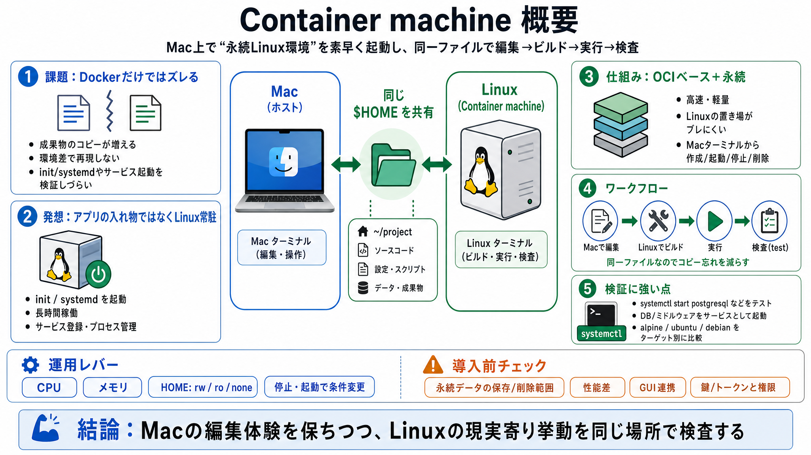

10 Container Security Best Practices in 2026
Background image for 10 Container Security Best Practices in 2026. # 10 Container Security Best Practices in 2026. A rev…

Mac×Linux 永続ワーク
ズレが出る
入れ物じゃない
OCIベース
HOMEを共有
systemdで検査
どこまで同じ?
ディストリ別
編集→検査
運用レバー
自作イメージ
結論と注意
Background image for 10 Container Security Best Practices in 2026. # 10 Container Security Best Practices in 2026. A rev…
## 15 Container Security Best Practices for Engineering Teams in 2026. * container security 101, Container security best…
Property 1=Software supply chain security 1. # Container Security Best Practices: An Enterprise Guide for 2026. Containe…
CNAPP Nav IconUnified Zero Trust CNAPP. https://accuknox.com/wp-content/uploads/GRC-nav-icon.svg. https://accuknox.com/w…
# 17 comprehensive container security best practices for 2026. **The adoption of containers continues to grow, so you ne…